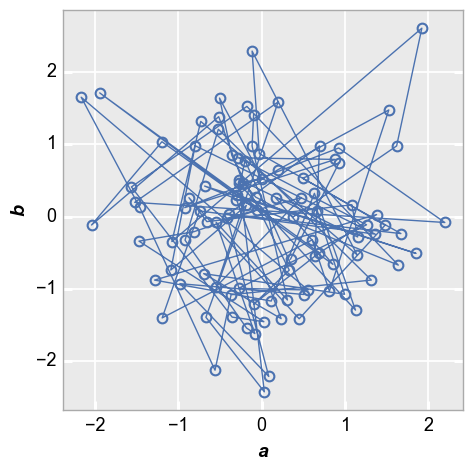

[ ]:
plot function tests¶
[1]:
__author__ = 'Kevin Tetz'
__copyright__ = 'Copyright (C) 2017 Steve Nicholes'
__license__ = 'GPL v3'
__version__ = '0.1.0'
[2]:
# Imports
%load_ext autoreload
%autoreload 2
%matplotlib inline
import os, sys, pdb
import scipy as sp
import pandas as pd
#sys.path = [r'C:\GitHub\fivecentplots'] + sys.path
sys.path = ['..\..'] + sys.path # relative import
import fivecentplots as fcp
filt = fcp.fcp.df_filter
osjoin = os.path.join
db = pdb.set_trace
[3]:
#imports = r'c:\code\jupy\imports'
#%run $imports -sns -q -s no
test file¶
[4]:
df = pd.read_csv(r'.\fake_data.csv')
df.head().T
---------------------------------------------------------------------------
FileNotFoundError Traceback (most recent call last)
<ipython-input-4-4e2ff728b381> in <module>
----> 1 df = pd.read_csv(r'.\fake_data.csv')
2 df.head().T
C:\Miniconda3\envs\pychar37\lib\site-packages\pandas\io\parsers.py in read_csv(filepath_or_buffer, sep, delimiter, header, names, index_col, usecols, squeeze, prefix, mangle_dupe_cols, dtype, engine, converters, true_values, false_values, skipinitialspace, skiprows, skipfooter, nrows, na_values, keep_default_na, na_filter, verbose, skip_blank_lines, parse_dates, infer_datetime_format, keep_date_col, date_parser, dayfirst, cache_dates, iterator, chunksize, compression, thousands, decimal, lineterminator, quotechar, quoting, doublequote, escapechar, comment, encoding, dialect, error_bad_lines, warn_bad_lines, delim_whitespace, low_memory, memory_map, float_precision)
684 )
685
--> 686 return _read(filepath_or_buffer, kwds)
687
688
C:\Miniconda3\envs\pychar37\lib\site-packages\pandas\io\parsers.py in _read(filepath_or_buffer, kwds)
450
451 # Create the parser.
--> 452 parser = TextFileReader(fp_or_buf, **kwds)
453
454 if chunksize or iterator:
C:\Miniconda3\envs\pychar37\lib\site-packages\pandas\io\parsers.py in __init__(self, f, engine, **kwds)
934 self.options["has_index_names"] = kwds["has_index_names"]
935
--> 936 self._make_engine(self.engine)
937
938 def close(self):
C:\Miniconda3\envs\pychar37\lib\site-packages\pandas\io\parsers.py in _make_engine(self, engine)
1166 def _make_engine(self, engine="c"):
1167 if engine == "c":
-> 1168 self._engine = CParserWrapper(self.f, **self.options)
1169 else:
1170 if engine == "python":
C:\Miniconda3\envs\pychar37\lib\site-packages\pandas\io\parsers.py in __init__(self, src, **kwds)
1996 kwds["usecols"] = self.usecols
1997
-> 1998 self._reader = parsers.TextReader(src, **kwds)
1999 self.unnamed_cols = self._reader.unnamed_cols
2000
pandas\_libs\parsers.pyx in pandas._libs.parsers.TextReader.__cinit__()
pandas\_libs\parsers.pyx in pandas._libs.parsers.TextReader._setup_parser_source()
FileNotFoundError: [Errno 2] No such file or directory: '.\\fake_data.csv'
filter for temperature¶
unique from file¶
[5]:
df['Temperature [C]'].unique()
---------------------------------------------------------------------------
NameError Traceback (most recent call last)
<ipython-input-5-50293772db91> in <module>
----> 1 df['Temperature [C]'].unique()
NameError: name 'df' is not defined
unique after filter¶
[6]:
fcp.df_filter(df, 'Temperature_C > 30')['Temperature [C]'].unique()
---------------------------------------------------------------------------
NameError Traceback (most recent call last)
<ipython-input-6-959c18bcb575> in <module>
----> 1 fcp.df_filter(df, 'Temperature_C > 30')['Temperature [C]'].unique()
NameError: name 'df' is not defined
missing column¶
returns same with nothing filtered
[7]:
fcp.df_filter(df, 'blah > 0').head().T
---------------------------------------------------------------------------
NameError Traceback (most recent call last)
<ipython-input-7-4de282dd8ab1> in <module>
----> 1 fcp.df_filter(df, 'blah > 0').head().T
NameError: name 'df' is not defined
get_current_values¶
[8]:
print(fcp.fcp.get_current_values.__doc__)
Parse a string looking for text enclosed by 'key' and replace with the
current value from the DataFrame
Args:
df (pd.DataFrame): DataFrame containing values we are looking for
text (str): string to parse
key (str): matching chars that enclose the value to replace from df
Returns:
updated string
df_filter¶
[9]:
print(fcp.fcp.df_filter.__doc__)
Filter the DataFrame
Due to limitations in pd.query, column names must not have spaces. This
function will temporarily replace spaces in the column names with
underscores, but the supplied query string must contain column names
without any spaces
Args:
df (pd.DataFrame): DataFrame to filter
filt_orig (str): query expression for filtering
drop_cols (bool): drop filtered columns from results
Returns:
filtered DataFrame
test strings¶
preferred to test as string rather than as pd.DataFrame first
[10]:
chars = {' ': '_', '.': 'dot', '[': '',']': '', '(': '', ')': '',
'-': '_', '^': '', '>': '', '<': '', '/': '_', '@': 'at',
'%': 'percent'}
[11]:
cols = ['a', 'b', 'c [spam]', 'd [spam/eggs]', 'e (blah)']
df = pd.DataFrame({c: sp.randn(100) for c in cols})
df.head().T
Warning: scipy.randn is deprecated and will be removed in SciPy 2.0.0, use numpy.random.randn instead
[11]:
| 0 | 1 | 2 | 3 | 4 | |
|---|---|---|---|---|---|
| a | 1.996846 | -0.510044 | 1.133669 | -0.254249 | 0.456459 |
| b | -0.213753 | -0.201530 | 0.530026 | 1.858969 | -0.006413 |
| c [spam] | 0.254844 | -1.836668 | 0.844998 | -0.381578 | -1.696516 |
| d [spam/eggs] | -0.885702 | 0.600850 | 0.025040 | 0.919736 | -1.926990 |
| e (blah) | 0.045454 | -0.965429 | -0.536117 | 1.454517 | 0.123342 |
[12]:
fcp.plot(df=df, x='a', y='b', inline=True)

c [spam] > 0¶
[14]:
filt_orig = 'c_spam > 0'
fcp.plot(df=filt(df, filt_orig), x='a', y='c [spam]', inline=True)
Could not filter data!
Original filter string: c_spam > 0
Modified filter string: fCpc_spam>0
---------------------------------------------------------------------------
DataError Traceback (most recent call last)
<ipython-input-14-afe25acefe99> in <module>
1 filt_orig = 'c_spam > 0'
----> 2 fcp.plot(df=filt(df, filt_orig), x='a', y='c [spam]', inline=True)
C:\GitHub\fivecentplots\fivecentplots\fcp.py in plot(*args, **kwargs)
274 """
275
--> 276 return plotter(data.XY, **dfkwarg(args, kwargs))
277
278
C:\GitHub\fivecentplots\fivecentplots\fcp.py in plotter(dobj, **kwargs)
864
865 # Build the data object and update kwargs
--> 866 dd = dobj(**kwargs)
867 for k, v in kwargs.items():
868 if k in dd.__dict__.keys():
C:\GitHub\fivecentplots\fivecentplots\data\xy.py in __init__(self, **kwargs)
12 def __init__(self, **kwargs):
13
---> 14 super().__init__(**kwargs)
15
16 # overrides
C:\GitHub\fivecentplots\fivecentplots\data\data.py in __init__(self, name, req, opt, **kwargs)
156 self.y_vals = [f for f in self.y] if self.y else None
157 self.z = utl.validate_list(kwargs.get('z'))
--> 158 self.x = self.check_xyz('x')
159 self.y = self.check_xyz('y')
160 self.z = self.check_xyz('z')
C:\GitHub\fivecentplots\fivecentplots\data\data.py in check_xyz(self, xyz)
567 for val in vals:
568 if val not in self.df_all.columns:
--> 569 raise DataError('No column named "%s" found in DataFrame' % val)
570
571 # Check case
DataError: No column named "a" found in DataFrame
d_spam_eggs > 0¶
[15]:
filt_orig = 'd_spam_eggs > 0'
fcp.plot(df=filt(df, filt_orig), x='a', y='d [spam/eggs]', inline=True)
Could not filter data!
Original filter string: d_spam_eggs > 0
Modified filter string: fCpd_spam_eggs>0
---------------------------------------------------------------------------
DataError Traceback (most recent call last)
<ipython-input-15-2ba2f87faeba> in <module>
1 filt_orig = 'd_spam_eggs > 0'
----> 2 fcp.plot(df=filt(df, filt_orig), x='a', y='d [spam/eggs]', inline=True)
C:\GitHub\fivecentplots\fivecentplots\fcp.py in plot(*args, **kwargs)
274 """
275
--> 276 return plotter(data.XY, **dfkwarg(args, kwargs))
277
278
C:\GitHub\fivecentplots\fivecentplots\fcp.py in plotter(dobj, **kwargs)
864
865 # Build the data object and update kwargs
--> 866 dd = dobj(**kwargs)
867 for k, v in kwargs.items():
868 if k in dd.__dict__.keys():
C:\GitHub\fivecentplots\fivecentplots\data\xy.py in __init__(self, **kwargs)
12 def __init__(self, **kwargs):
13
---> 14 super().__init__(**kwargs)
15
16 # overrides
C:\GitHub\fivecentplots\fivecentplots\data\data.py in __init__(self, name, req, opt, **kwargs)
156 self.y_vals = [f for f in self.y] if self.y else None
157 self.z = utl.validate_list(kwargs.get('z'))
--> 158 self.x = self.check_xyz('x')
159 self.y = self.check_xyz('y')
160 self.z = self.check_xyz('z')
C:\GitHub\fivecentplots\fivecentplots\data\data.py in check_xyz(self, xyz)
567 for val in vals:
568 if val not in self.df_all.columns:
--> 569 raise DataError('No column named "%s" found in DataFrame' % val)
570
571 # Check case
DataError: No column named "a" found in DataFrame